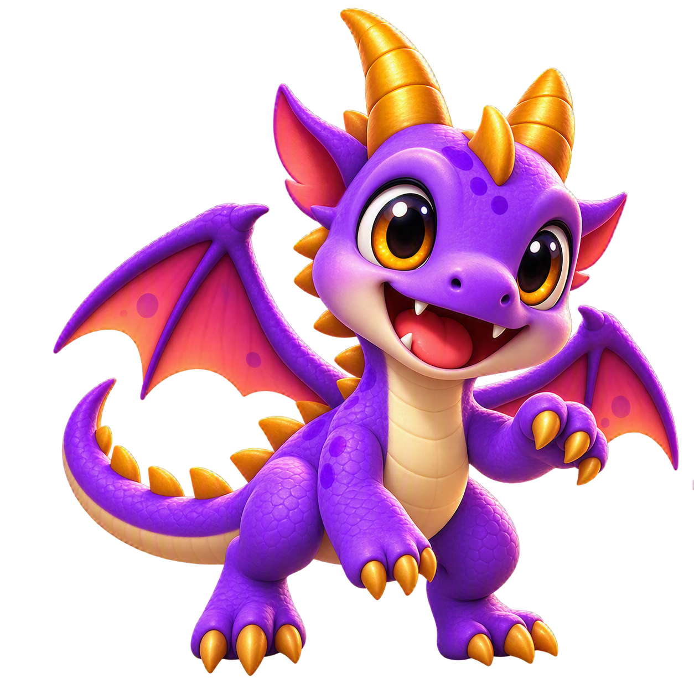
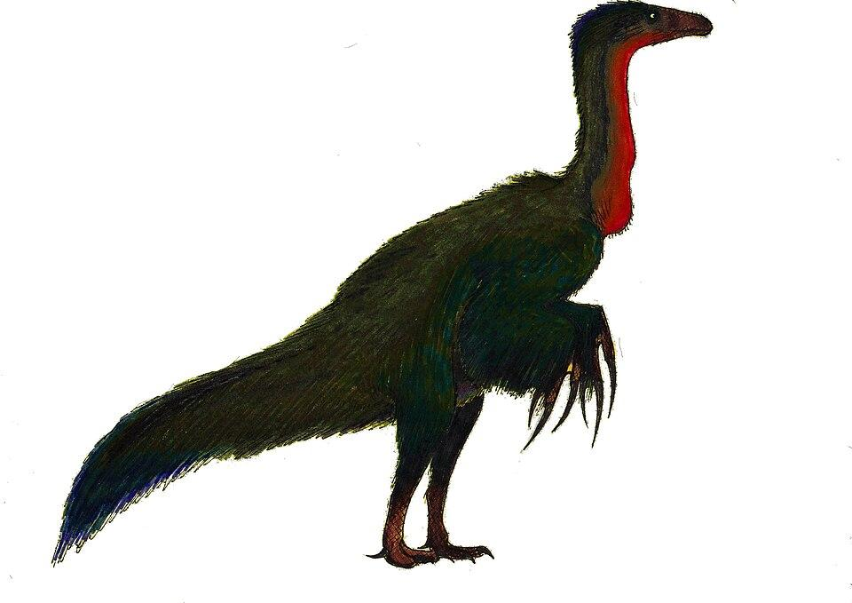
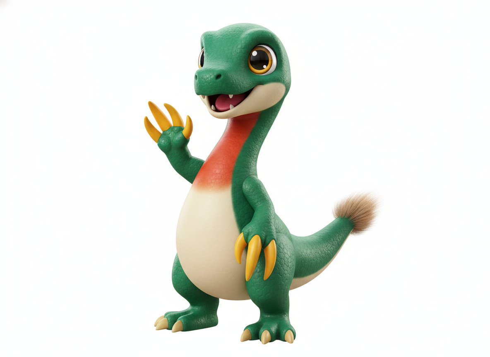
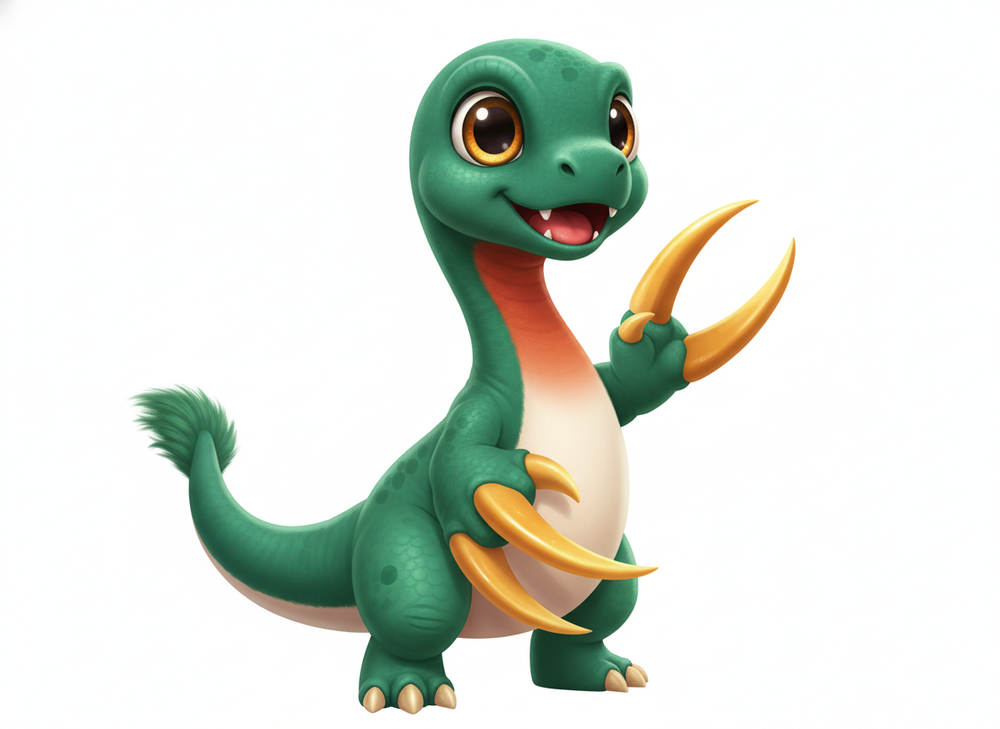

gemini-2.5-flash-image，共 2 次呼叫（含重生成），成本約 US$0.08assets/dinos_2/bban_samples/_gen_gemini_styleA_therizinosaurus.pygemini_styleA_therizinosaurus.png（1024×1024 白底；候選一保留為 _c1.png）；遊戲用可再走 rembg → 512 → 200×200 WebPAGENTS.md「Art style registry」區段